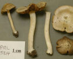

<tr class="keychoice">
<td id="k4">4a. xx.</td>
<td ><!-- image --></td>
<td ><!-- image --></td>
<td ><a href="#k2">&nbsp; &nbsp; &nbsp; &nbsp; 2</a></td>
</tr><tr >
<td >4b. Not as above.</td>
<td ><!-- image --></td>
<td ><!-- image --></td>
<td ><a href="#k3">&nbsp; &nbsp; &nbsp; &nbsp; 3</a></td>
</tr>


<tr class="keychoice">
<td >5a. xx.</td>
<td ><!-- image --></td>
<td ><!-- image --></td>
<td ><span class="taxon"><a href="/fungi/species/species.jsp?gid=xxxx">
 <i class="genus">Inocybe</i> 
 <i class="epithet">xxxx</i></a>
	</span></td>
</tr><tr >
<td >5b. xx.</td>
<td ></td>
<td ><!-- image --></td>
<td ><span class="taxon"><a href="/fungi/species/species.jsp?gid=xxxx">
 <i class="genus">Inocybe</i> 
 <i class="epithet">xxxxx</i></a>
	</span></td>
</tr><tr >
<td ></td>
<td colspan="2">Note: Spores need to be checked when ...........</td>
<td ><span class="taxon"></span></td>
</tr>